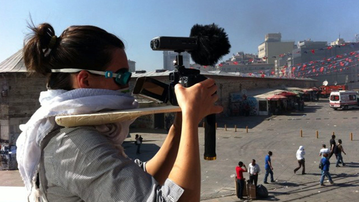

In this course Eva will guide you through the process of how to make great documentaries in extreme conditions. Ever wondered how to cope with extreme temperatures, sandstorms, riots and conflict whilst attempting to make your documentary? Ever wanted to go into situations of political unrest and emotional upheaval, and be able to create a documentary that does justice to the events portrayed, whilst maintaining artistic integrity? Over the course of this two hour workshop documentary filmmaker, Eva Stotz, will discuss the evolution of her documentary 'One Million Steps' - where shooting collided with the Turkish uprising.
This course is suitable for complete beginners and intermediate levels.
